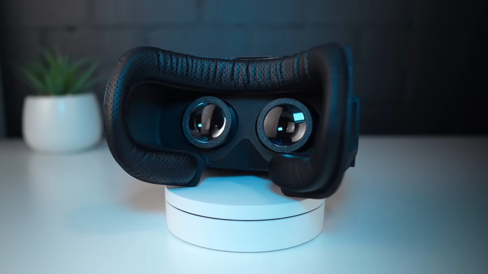

Una investigación profunda sobre la evolución tecnológica de la Realidad Virtual
Las tecnologías emergentes en informática hacen referencia a avances que impulsan la innovación disruptiva. Aunque suelen encontrarse en sus primeras etapas de desarrollo, su objetivo fundamental es impactar de forma directa en diversos sectores, optimizando procesos y redefiniendo por completo la interacción humana.
En el corazón de esta revolución digital se consolida la Realidad Virtual (RV), la cual no debe entenderse como una simple optimización de las capacidades visuales existentes, sino como un paradigma completamente nuevo de computación inmersiva. A través de un enfoque técnico e investigativo, descubrimos un ecosistema donde el usuario se sumerge en un mundo sintético generado enteramente por ordenador. En este entorno alternativo, los sentidos tradicionales dejan de percibir el mundo físico, sustituyéndolo por una experiencia basada en los conceptos clave de inmersión, presencia e interacción multimodal a través de interfaces de comunicación específicas.